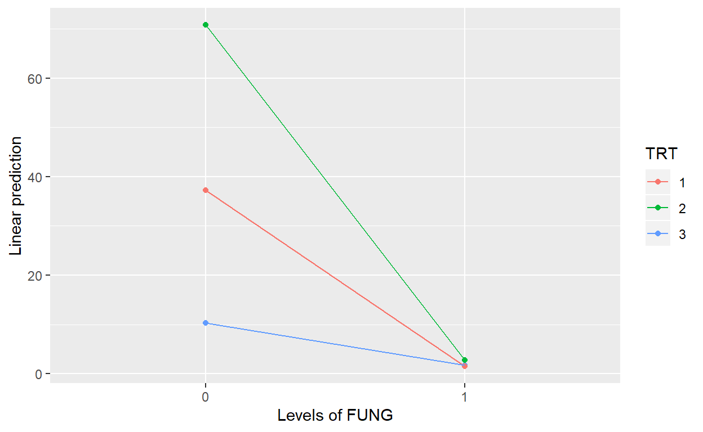

Load packages
Here is the R code to download the required packages for this exercise.
# install package manager 'pacman'
if (!require(pacman)){
install.packages('pacman')
}## Loading required package: pacman# load packages needed for this exercise
pacman::p_load(tidyverse,
nlme,
emmeans,
predictmeans
)Data
This is equivalent to the data step in SAS. Here, the data is imported from a file data.csv using the function read_csv.
# Import data
a <- read_csv("data.csv")## Parsed with column specification:
## cols(
## WP = col_double(),
## SP = col_character(),
## BLK = col_double(),
## TRT = col_double(),
## FUNG = col_double(),
## DS = col_double(),
## YIELD = col_double()
## )# print the data
a# specify that FUNG, TRT, and BLK are factors
a$FUNG <- as.ordered(as.factor(a$FUNG))
a$TRT <- as.ordered(as.factor(a$TRT))
a$BLK <- as.ordered(as.factor(a$BLK))Mixed model for response variable DS
# fit the model
mm_1 <- lme(DS ~ TRT*FUNG, # fixed effects
data = a,
random = ~1|BLK/TRT) # read mm_1 as mixed model 1
# summary output
summary(mm_1)## Linear mixed-effects model fit by REML
## Data: a
## AIC BIC logLik
## 156.1691 164.1825 -69.08456
##
## Random effects:
## Formula: ~1 | BLK
## (Intercept)
## StdDev: 0.0009561632
##
## Formula: ~1 | TRT %in% BLK
## (Intercept) Residual
## StdDev: 0.001007113 7.918859
##
## Fixed effects: DS ~ TRT * FUNG
## Value Std.Error DF t-value p-value
## (Intercept) 20.708333 1.616430 9 12.811150 0.0000
## TRT.L -9.457553 2.799740 6 -3.378012 0.0149
## TRT.Q -19.646949 2.799740 6 -7.017420 0.0004
## FUNG.L -26.457579 2.285978 9 -11.573857 0.0000
## TRT.L:FUNG.L 13.625000 3.959430 9 3.441152 0.0074
## TRT.Q:FUNG.L 26.485944 3.959430 9 6.689333 0.0001
## Correlation:
## (Intr) TRT.L TRT.Q FUNG.L TRT.L:
## TRT.L 0
## TRT.Q 0 0
## FUNG.L 0 0 0
## TRT.L:FUNG.L 0 0 0 0
## TRT.Q:FUNG.L 0 0 0 0 0
##
## Standardized Within-Group Residuals:
## Min Q1 Med Q3 Max
## -2.241484e+00 -9.471064e-02 -1.590814e-08 1.736361e-01 2.683467e+00
##
## Number of Observations: 24
## Number of Groups:
## BLK TRT %in% BLK
## 4 12# type 3 tests of fixed effects
anova(mm_1)# visualize interaction
emmip(mm_1, TRT ~ FUNG)
# to do anova for random effects, we need to compare mm_1 with a model that only has fixed effects,
# we can use `gls()` function in `nlme` to fit the fixed effects model
fixed_model <- gls(DS ~ TRT * FUNG,
data = a)
# test the random effects in the model
anova(mm_1, fixed_model)# least square means
test(emmeans(mm_1, "TRT"))## NOTE: Results may be misleading due to involvement in interactionstest(emmeans(mm_1, "FUNG"))## NOTE: Results may be misleading due to involvement in interactions# pairwise difference
test(emmeans(mm_1, pairwise ~ TRT), adjust = "none")## NOTE: Results may be misleading due to involvement in interactions## $emmeans
## TRT emmean SE df t.ratio p.value
## 1 19.4 2.8 3 6.920 0.0062
## 2 36.8 2.8 3 13.126 0.0010
## 3 6.0 2.8 3 2.143 0.1215
##
## Results are averaged over the levels of: FUNG
## d.f. method: containment
##
## $contrasts
## contrast estimate SE df t.ratio p.value
## 1 - 2 -17.4 3.96 6 -4.388 0.0046
## 1 - 3 13.4 3.96 6 3.378 0.0149
## 2 - 3 30.8 3.96 6 7.766 0.0002
##
## Results are averaged over the levels of: FUNGtest(emmeans(mm_1, pairwise ~ FUNG))## NOTE: Results may be misleading due to involvement in interactions## $emmeans
## FUNG emmean SE df t.ratio p.value
## 0 39.4 2.29 3 17.243 0.0004
## 1 2.0 2.29 3 0.875 0.4460
##
## Results are averaged over the levels of: TRT
## d.f. method: containment
##
## $contrasts
## contrast estimate SE df t.ratio p.value
## 0 - 1 37.4 3.23 9 11.574 <.0001
##
## Results are averaged over the levels of: TRTtest(emmeans(mm_1, pairwise ~ TRT*FUNG), adjust = "none")## $emmeans
## TRT FUNG emmean SE df t.ratio p.value
## 1 0 37.25 3.96 3 9.408 0.0025
## 2 0 70.75 3.96 3 17.869 0.0004
## 3 0 10.25 3.96 3 2.589 0.0812
## 1 1 1.50 3.96 3 0.379 0.7300
## 2 1 2.75 3.96 3 0.695 0.5373
## 3 1 1.75 3.96 3 0.442 0.6884
##
## d.f. method: containment
##
## $contrasts
## contrast estimate SE df t.ratio p.value
## 1,0 - 2,0 -33.50 5.6 6 -5.983 0.0010
## 1,0 - 3,0 27.00 5.6 6 4.822 0.0029
## 1,0 - 1,1 35.75 5.6 9 6.385 0.0001
## 1,0 - 2,1 34.50 5.6 6 6.161 0.0008
## 1,0 - 3,1 35.50 5.6 6 6.340 0.0007
## 2,0 - 3,0 60.50 5.6 6 10.805 <.0001
## 2,0 - 1,1 69.25 5.6 6 12.367 <.0001
## 2,0 - 2,1 68.00 5.6 9 12.144 <.0001
## 2,0 - 3,1 69.00 5.6 6 12.323 <.0001
## 3,0 - 1,1 8.75 5.6 6 1.563 0.1692
## 3,0 - 2,1 7.50 5.6 6 1.339 0.2289
## 3,0 - 3,1 8.50 5.6 9 1.518 0.1633
## 1,1 - 2,1 -1.25 5.6 6 -0.223 0.8308
## 1,1 - 3,1 -0.25 5.6 6 -0.045 0.9658
## 2,1 - 3,1 1.00 5.6 6 0.179 0.8641Diagnostic plots
# pearson residuals vs. fitted values
plot(mm_1, resid(., type="pearson") ~ fitted(.), abline = 0)# standardaized residuals vs. fitted values
plot(mm_1, resid(., scaled=TRUE) ~ fitted(.), abline = 0)# qq plot
qqnorm(residuals(mm_1))
qqline(residuals(mm_1))#observed vs. fitted values
plot(mm_1, DS ~ fitted(.), abline = c(0,1))Mixed model for response variable YIELD
# fit the model
mm_2 <- lme(YIELD ~ TRT*FUNG, # fixed effects
data = a,
random = ~1|BLK/TRT) # read mm_2 as mixed model 2
# summary output
summary(mm_2)## Linear mixed-effects model fit by REML
## Data: a
## AIC BIC logLik
## 209.9214 217.9348 -95.9607
##
## Random effects:
## Formula: ~1 | BLK
## (Intercept)
## StdDev: 11.99815
##
## Formula: ~1 | TRT %in% BLK
## (Intercept) Residual
## StdDev: 0.001914579 33.61779
##
## Fixed effects: YIELD ~ TRT * FUNG
## Value Std.Error DF t-value p-value
## (Intercept) 335.1667 9.114752 9 36.77189 0.0000
## TRT.L 21.3016 11.885682 6 1.79221 0.1233
## TRT.Q 54.5522 11.885682 6 4.58974 0.0037
## FUNG.L 93.9274 9.704619 9 9.67862 0.0000
## TRT.L:FUNG.L -31.8750 16.808893 9 -1.89632 0.0904
## TRT.Q:FUNG.L -75.2720 16.808893 9 -4.47811 0.0015
## Correlation:
## (Intr) TRT.L TRT.Q FUNG.L TRT.L:
## TRT.L 0
## TRT.Q 0 0
## FUNG.L 0 0 0
## TRT.L:FUNG.L 0 0 0 0
## TRT.Q:FUNG.L 0 0 0 0 0
##
## Standardized Within-Group Residuals:
## Min Q1 Med Q3 Max
## -2.04399017 -0.33265713 0.07191314 0.49972251 1.20545632
##
## Number of Observations: 24
## Number of Groups:
## BLK TRT %in% BLK
## 4 12# type 3 tests of fixed effects
anova(mm_2)# visualize interaction
emmip(mm_2, TRT ~ FUNG)# to do anova for random effects, we need to compare mm_1 with a model that only has fixed effects,
# we can use `gls()` function in `nlme` to fit the fixed effects model
fixed_model_YIELD <- gls(YIELD ~ TRT * FUNG,
data = a)
# test the random effects in the model
anova(mm_2, fixed_model_YIELD)# least square means
test(emmeans(mm_2, "TRT"))## NOTE: Results may be misleading due to involvement in interactionstest(emmeans(mm_2, "FUNG"))## NOTE: Results may be misleading due to involvement in interactions# pairwise difference
test(emmeans(mm_2, pairwise ~ TRT), adjust = "none")## NOTE: Results may be misleading due to involvement in interactions## $emmeans
## TRT emmean SE df t.ratio p.value
## 1 342 13.3 3 25.716 0.0001
## 2 291 13.3 3 21.829 0.0002
## 3 372 13.3 3 27.978 0.0001
##
## Results are averaged over the levels of: FUNG
## d.f. method: containment
##
## $contrasts
## contrast estimate SE df t.ratio p.value
## 1 - 2 51.8 16.8 6 3.079 0.0217
## 1 - 3 -30.1 16.8 6 -1.792 0.1233
## 2 - 3 -81.9 16.8 6 -4.871 0.0028
##
## Results are averaged over the levels of: FUNGtest(emmeans(mm_2, pairwise ~ FUNG))## NOTE: Results may be misleading due to involvement in interactions## $emmeans
## FUNG emmean SE df t.ratio p.value
## 0 269 11.4 3 23.556 0.0002
## 1 402 11.4 3 35.198 0.0001
##
## Results are averaged over the levels of: TRT
## d.f. method: containment
##
## $contrasts
## contrast estimate SE df t.ratio p.value
## 0 - 1 -133 13.7 9 -9.679 <.0001
##
## Results are averaged over the levels of: TRTtest(emmeans(mm_2, pairwise ~ TRT*FUNG), adjust = "none")## $emmeans
## TRT FUNG emmean SE df t.ratio p.value
## 1 0 282 17.8 3 15.787 0.0006
## 2 0 181 17.8 3 10.128 0.0021
## 3 0 344 17.8 3 19.261 0.0003
## 1 1 403 17.8 3 22.580 0.0002
## 2 1 400 17.8 3 22.440 0.0002
## 3 1 401 17.8 3 22.482 0.0002
##
## d.f. method: containment
##
## $contrasts
## contrast estimate SE df t.ratio p.value
## 1,0 - 2,0 101.00 23.8 6 4.249 0.0054
## 1,0 - 3,0 -62.00 23.8 6 -2.608 0.0402
## 1,0 - 1,1 -121.25 23.8 9 -5.101 0.0006
## 1,0 - 2,1 -118.75 23.8 6 -4.996 0.0025
## 1,0 - 3,1 -119.50 23.8 6 -5.027 0.0024
## 2,0 - 3,0 -163.00 23.8 6 -6.857 0.0005
## 2,0 - 1,1 -222.25 23.8 6 -9.349 0.0001
## 2,0 - 2,1 -219.75 23.8 9 -9.244 <.0001
## 2,0 - 3,1 -220.50 23.8 6 -9.276 0.0001
## 3,0 - 1,1 -59.25 23.8 6 -2.492 0.0470
## 3,0 - 2,1 -56.75 23.8 6 -2.387 0.0542
## 3,0 - 3,1 -57.50 23.8 9 -2.419 0.0387
## 1,1 - 2,1 2.50 23.8 6 0.105 0.9197
## 1,1 - 3,1 1.75 23.8 6 0.074 0.9437
## 2,1 - 3,1 -0.75 23.8 6 -0.032 0.9759Diagnostic plots
# pearson residuals vs. fitted values
plot(mm_2, resid(., type="pearson") ~ fitted(.), abline = 0)# standardaized residuals vs. fitted values
plot(mm_2, resid(., scaled=TRUE) ~ fitted(.), abline = 0)# qq plot
qqnorm(residuals(mm_2))
qqline(residuals(mm_2))
#observed vs. fitted values
plot(mm_2, YIELD ~ fitted(.), abline = c(0,1))
Linear regression between YIELD and DS
# fit `lm` model
lm_1 <- lm(YIELD ~ DS, data = a)
summary(lm_1)##
## Call:
## lm(formula = YIELD ~ DS, data = a)
##
## Residuals:
## Min 1Q Median 3Q Max
## -61.196 -18.565 0.856 22.676 56.812
##
## Coefficients:
## Estimate Std. Error t value Pr(>|t|)
## (Intercept) 399.2384 8.0711 49.47 < 2e-16 ***
## DS -3.0940 0.2399 -12.90 9.81e-12 ***
## ---
## Signif. codes: 0 '***' 0.001 '**' 0.01 '*' 0.05 '.' 0.1 ' ' 1
##
## Residual standard error: 31.17 on 22 degrees of freedom
## Multiple R-squared: 0.8832, Adjusted R-squared: 0.8779
## F-statistic: 166.4 on 1 and 22 DF, p-value: 9.809e-12anova(lm_1)# diagnostic plots
residplot(lm_1)Linear regression between RY1 and DS
b <- a %>%
mutate(RY1 = YIELD/399.23843)
# fit linear regression model
lm_2 <- lm(RY1 ~ DS, data = b)
summary(lm_2)##
## Call:
## lm(formula = RY1 ~ DS, data = b)
##
## Residuals:
## Min 1Q Median 3Q Max
## -0.153282 -0.046502 0.002143 0.056798 0.142301
##
## Coefficients:
## Estimate Std. Error t value Pr(>|t|)
## (Intercept) 1.0000000 0.0202162 49.47 < 2e-16 ***
## DS -0.0077498 0.0006008 -12.90 9.81e-12 ***
## ---
## Signif. codes: 0 '***' 0.001 '**' 0.01 '*' 0.05 '.' 0.1 ' ' 1
##
## Residual standard error: 0.07806 on 22 degrees of freedom
## Multiple R-squared: 0.8832, Adjusted R-squared: 0.8779
## F-statistic: 166.4 on 1 and 22 DF, p-value: 9.809e-12anova(lm_2)# diagnostic plots
residplot(lm_2)Transform dataset a
a_yield <- a %>%
dplyr::select(BLK, TRT, YIELD) %>%
arrange(BLK, TRT, YIELD) %>%
group_by(BLK, TRT) %>%
summarise(RY2 = YIELD[1]/YIELD[2]) %>%
ungroup()
a_ds <- a %>%
dplyr::select(BLK, TRT, DS) %>%
arrange(BLK, TRT, DS) %>%
group_by(BLK, TRT) %>%
summarise(CDS = DS[2]) %>%
ungroup()
a_new <- a_yield %>%
inner_join(a_ds) %>%
ungroup() %>%
mutate(BLK = parse_factor(as.character(BLK)),
TRT = parse_factor(as.character(TRT)))## Joining, by = c("BLK", "TRT")# print the data
a_newMixed model for RY2
# fit the model
mm_3 <- lme(RY2 ~ TRT, # fixed effects
data = a_new,
random = ~1|BLK) # read mm_3 as mixed model 3
# summary output
summary(mm_3)## Linear mixed-effects model fit by REML
## Data: a_new
## AIC BIC logLik
## 2.04077 3.026893 3.979615
##
## Random effects:
## Formula: ~1 | BLK
## (Intercept) Residual
## StdDev: 0.05297273 0.1134963
##
## Fixed effects: RY2 ~ TRT
## Value Std.Error DF t-value p-value
## (Intercept) 0.7016501 0.06262490 6 11.204012 0.0000
## TRT2 -0.2467228 0.08025398 6 -3.074274 0.0218
## TRT3 0.1561339 0.08025398 6 1.945497 0.0997
## Correlation:
## (Intr) TRT2
## TRT2 -0.641
## TRT3 -0.641 0.500
##
## Standardized Within-Group Residuals:
## Min Q1 Med Q3 Max
## -1.50508335 -0.38516867 -0.01698779 0.58195830 1.29565814
##
## Number of Observations: 12
## Number of Groups: 4# type 3 tests of fixed effects
anova(mm_3)# to do anova for random effects, we need to compare mm_1 with a model that only has fixed effects,
# we can use `gls()` function in `nlme` to fit the fixed effects model
fixed_model_RY2 <- gls(RY2 ~ TRT,
data = a_new)
# test the random effects in the model
anova(mm_3, fixed_model_RY2)# pairwise difference
test(emmeans(mm_3, pairwise ~ TRT), adjust = "none")## $emmeans
## TRT emmean SE df t.ratio p.value
## 1 0.702 0.0626 3 11.204 0.0015
## 2 0.455 0.0626 3 7.264 0.0054
## 3 0.858 0.0626 3 13.697 0.0008
##
## d.f. method: containment
##
## $contrasts
## contrast estimate SE df t.ratio p.value
## 1 - 2 0.247 0.0803 6 3.074 0.0218
## 1 - 3 -0.156 0.0803 6 -1.945 0.0997
## 2 - 3 -0.403 0.0803 6 -5.020 0.0024# diagnostic plots
residplot(mm_3)Linear regression between RY2 and CDS
# fit linear regression model
lm_3 <- lm(RY2 ~ CDS, data = a_new)
summary(lm_3)##
## Call:
## lm(formula = RY2 ~ CDS, data = a_new)
##
## Residuals:
## Min 1Q Median 3Q Max
## -0.13338 -0.05085 -0.01090 0.06530 0.12439
##
## Coefficients:
## Estimate Std. Error t value Pr(>|t|)
## (Intercept) 0.9386111 0.0467991 20.056 2.09e-09 ***
## CDS -0.0067778 0.0009845 -6.884 4.28e-05 ***
## ---
## Signif. codes: 0 '***' 0.001 '**' 0.01 '*' 0.05 '.' 0.1 ' ' 1
##
## Residual standard error: 0.09061 on 10 degrees of freedom
## Multiple R-squared: 0.8258, Adjusted R-squared: 0.8083
## F-statistic: 47.39 on 1 and 10 DF, p-value: 4.275e-05anova(lm_3)# diagnostic plots
residplot(lm_3)